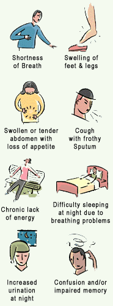

How do you know if you are having a heart attack?
Most people feel pain, pressure or squeezing in their chest. In addition to or instead of chest pain, about a third of people have symptoms that include abdominal pain, heavy sweating, back pain, neck pain, nausea and vomiting. Unfortunately, many people mistakenly dismiss such symptoms. Thus, if your symptoms come on suddenly, or if they worsen over a period of hours or days, you should assume they are caused by a heart attack and go to an emergency room.
